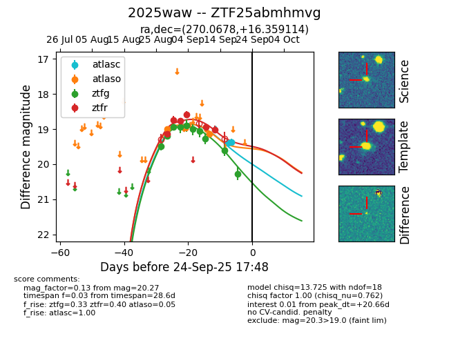
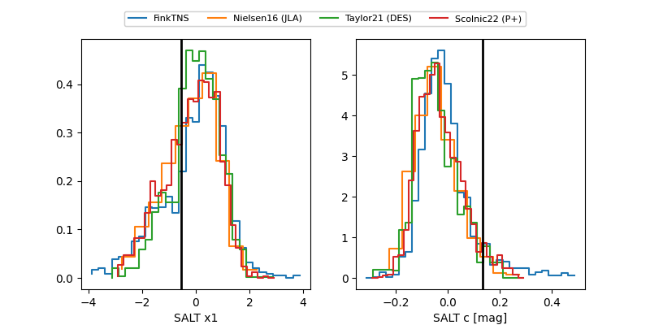

FINK: ZTF25abmhmvg
Lasair: ZTF25abmhmvg
ALeRCE: ZTF25abmhmvg
TNS: 2025waw
YSE: 2025waw
ZTF25abmhmvg (ztf,fink)
2025waw (tns,yse)
equatorial (ra, dec) = (270.0678,+16.35911)
galactic (l, b) = (42.2661,+18.51195)


last atlasc=19.38, atlaso=19.13, ztfg=20.27, ztfr=19.01
2 atlasc, 2 atlaso, 10 ztfg, 6 ztfr detections